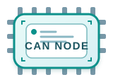

指针、对象与存储期
区分栈、静态存储区、只读区和堆的生命周期；明确指针指向的对象是否仍有效、是否存在越界或别名访问。
static uint8_t rx[64]; uint8_t *p = rx; /* p 只在数组范围内移动 */ p[0] = 0x55;
- 局部变量离开作用域后不能继续解引用。
- 嵌入式中动态分配需考虑碎片与失败路径。
Module 01 / interview basics
面试中不只要会调用库函数，更要说清变量在哪里、并发为什么出错、数据怎样从 MCU 到外设。本页按“C 语言 → 通信协议”建立基础回答框架。
先把存储期、访问方式和并发边界讲清，外设驱动代码才有可靠的基础。
区分栈、静态存储区、只读区和堆的生命周期；明确指针指向的对象是否仍有效、是否存在越界或别名访问。
static uint8_t rx[64]; uint8_t *p = rx; /* p 只在数组范围内移动 */ p[0] = 0x55;
使用掩码进行置位、清位和读改写；同时关注外设寄存器的读写语义，避免把状态位、写一清零位当普通变量处理。
#define EN (1u << 3)
REG |= EN; /* set */
REG &= ~EN; /* clear */
if (STATUS & EN) { }
volatile 约束编译器不要缓存或删去对对象的访问；它不自动解决原子性、顺序或互斥，需要结合临界区、原子操作和缓冲策略。
volatile uint8_t ready;
/* ISR writes, main reads */
ready = 1;
if (ready) { /* ... */ }
const、static、volatile：约束的不是同一件事const 表示不能通过这个名称修改对象，常用于只读配置、查表和函数只读参数；它是接口约束，不等于对象一定在 Flash，也不能阻止硬件、DMA 或其他非 const 别名改变同一地址。
static 用在函数内时让对象只初始化一次、函数返回后值仍保留；用在文件作用域时让变量或函数仅本文件可见，适合封装驱动内部状态。它不提供线程安全，任务和中断共享时仍要处理并发。
volatile 要求编译器每次都真正访问该地址，适合外设寄存器和 ISR、DMA 可能改写的共享标志；它不是锁，不能保证原子性、互斥、执行顺序或 DMA 缓存一致性。
/* ADC 中断采样，主循环处理：三个关键字各做不同的事 */
static const uint16_t kOverCurrentLimit = 3000U; /* const：只读阈值；static：仅本文件可见 */
static volatile bool s_adcReady = false; /* volatile：ISR 写，主循环读 */
void ADC1_2_IRQHandler(void)
{
if (ADC1->ISR & ADC_ISR_EOC) {
s_adcReady = true;
}
}
void App_ControlStep(uint16_t adcValue)
{
static uint32_t handledSamples = 0U; /* static：函数多次调用后仍保留计数 */
if (s_adcReady) {
s_adcReady = false;
handledSamples++;
if (adcValue > kOverCurrentLimit) {
Motor_Stop();
}
}
}
并发边界：这里的 volatile 只保证读取/写入不会被编译器缓存或省略；若 ISR 与主循环可能在“判断并清零”之间并发，或数据超过 CPU 原子访问宽度，仍应使用临界区、原子操作或队列。
上层向下调用能力，下层向上提供支撑；分层的目的，是让业务变化与具体芯片、器件变化尽量解耦。
控制策略、状态机、通信协议、任务调度和业务规则；应描述“做什么”，尽量不直接依赖某个 GPIO 或寄存器。
基于 HAL、SPL、LL 或寄存器实现板级初始化和具体器件接口，例如按键、屏幕、传感器、电机、CAN 收发器。
把外设寄存器、时钟、GPIO、DMA、中断等组织为可调用 API；它们是库级抽象与封装，本身不是某块外设的完整业务驱动。
最贴近芯片的硬件访问：配置 RCC、GPIO、外设控制/状态寄存器和中断。若项目不用现成组件，这里也承担最直接的设备驱动实现。
MCU 内核、总线、外设寄存器、GPIO 引脚、DMA、定时器以及板外传感器、屏幕、电机和收发器。
把代码、DMA、外设和中断放进同一条数据路径，才能理解“寄存器访问”和“中断响应”实际发生在哪里。
DMA（Direct Memory Access）由专用硬件在外设与内存之间搬运数据。CPU 负责配置和收尾，不必逐字节执行读写。
外设产生请求后，DMA 控制器可按配置在“外设寄存器 ↔ 内存”或“内存 ↔ 内存”之间传输。常用于 UART 连续接收、ADC 采样、SPI 大块读写；这样能减少 CPU 中断与搬运开销，但不等于 CPU 从此不需要参与。
DMA 的核心不是“数据凭空自己过去”，而是 CPU 先安排好路线，之后由硬件替 CPU 重复搬货。
rx_ring，待发送的数据放进 tx_frame。下面以 UART 连续接收为例。两种方式都能完成通信，区别在于每一个字节到来时，CPU 是否必须亲自参与搬运。
这条路径简单直观，适合低速、少量数据；但波特率高、数据连续或 CPU 还有控制任务时，频繁中断和上下文切换会挤占处理时间。
DMA 减少的是“CPU 每字节搬运和中断频率”，不会消除总线访问；DMA 仍要占 AHB 带宽，CPU 仍要负责配置、缓冲区边界、缓存一致性和错误处理。
/* 概念伪代码：UART 不定长接收 */ DMA.source = USART_RDR; DMA.dest = rx_ring; DMA.mode = CIRCULAR; /* IDLE 中断：快照写入位置，再交给任务解析 */ write_pos = RX_SIZE - DMA.remaining;
volatile。以 STM32F1 类 MCU 的 UART + DMA 为例：CPU 先配寄存器；真正开始搬运的不是 CPU，而是外设发出的 DMA 请求。点击右侧路径，看数据、请求和中断分别怎么流动。
每种协议都从“连接什么线、典型芯片是什么、开发时验证什么”来理解，而不是只记名称。
通过 TX/RX 的异步串行通信配置波特率、帧格式和中断/DMA 收发，适合日志输出、调试终端和模块化指令交互。
示例为 STM32F103 默认 USART1 映射；若重映射或换封装，必须重新查芯片 AF/引脚表与原理图。
复用推挽输出 · AF_PP由 MCU 主动驱动高、低电平送往对端 RX；推挽边沿清晰、驱动能力足够。F1 需同时开启 GPIOA、AFIO、USART1 时钟。
输入浮空 / 上拉输入数据由外部 TX 驱动，MCU 不能再输出。空闲高电平通常由对端或上拉保持；板级电平必须匹配。
非 GPIO，但必须连接UART 是单端电平通信；没有共同地参考，即使 TX/RX 交叉连接也可能乱码或完全收不到。
待检查：先确认 TX/RX 交叉连接与共地。
通过报文 ID、滤波、接收中断和错误状态处理多节点总线通信。协议控制器与物理层收发器是不同职责。
示例为 STM32G431 的 FDCAN1 常见映射 PA12/PA11（AF9）；具体封装、复用表和 TJA1051 的 STB/EN 接法以原理图为准。
复用输出 → 收发器 TXDMCU 只输出逻辑 TXD，不能直接接 CANH/CANL。FDCAN 外设控制该引脚，收发器再把逻辑电平转换为差分信号。
复用输入 ← 收发器 RXD收发器先比较 CANH/CANL，再把结果送给 MCU。RX 由外部驱动，MCU 仅采样，不应当作普通输出。
物理总线 · 非 MCU GPIO总线两端才放 120 Ω 终端匹配；收发器负责显性/隐性差分电平与短路保护，控制器负责帧、仲裁和错误状态。

这一轮演示按 A → B → C 排开，便于观察持续通信。真实 CAN 并不轮询：总线每次空闲后，所有待发节点重新竞争，报文 ID 更小者优先；没有待发报文的节点只监听。
待检查：控制器负责协议，收发器负责 CANH/CANL 差分物理层。
在 SCL/SDA 两线上完成设备寻址、寄存器读写和 ACK 应答，适合板内的低引脚数传感器与存储器连接。
共同点：两者都必须用开漏方式驱动同一对 SCL/SDA，并依赖外部上拉。差别：硬件 IIC 由外设产生时序、可配中断/DMA；软件 IIC 由 CPU 逐次翻转 GPIO，灵活但更占 CPU、容易受中断抖动影响。
示例为 STM32G071 I2C1 的 PB6(SCL)/PB7(SDA) 常见映射（AF 以具体封装表为准）。IIC 电平质量主要依赖板外上拉与总线电容，内部弱上拉通常不足以承担高速总线。
复用开漏 · AF_OD设备只能主动拉低，释放后由上拉电阻恢复高电平；因此支持时钟拉伸和多主“线与”仲裁，不会硬推高与他人冲突。
复用开漏 · AF_OD数据同样只拉低或释放；SCL 高电平期间 SDA 稳定才是普通数据，变化才定义 START/STOP。
常从 2.2 kΩ–10 kΩ 估算阻值需由速率、总线电容、上升时间和功耗共同决定；过大上升慢，过小低电平电流增大。
把 PB6/PB7 配为 I2C 复用开漏，外设状态机生成 START/STOP、处理移位和 ACK；可配中断/DMA，CPU 占用低、时钟更稳定。仍需正确设置 TIMING、超时、错误标志和总线恢复策略。
把任意两根 GPIO 做成开漏：输出低时拉低，输出高必须切成“释放”让上拉拉高。代码自己产生时序、采样 ACK、处理时钟拉伸和仲裁；更灵活但占 CPU、速度较低且容易受中断抖动影响。
怎么选：资源和时序正常时优先硬件 IIC；引脚无法复用、器件时序特殊、需要规避特定外设限制或仅低速调试时可用软件 IIC。无论哪种实现，SCL/SDA 都不能用推挽硬推高。
待检查：SCL 高电平期间 SDA 改变才表示起始或停止条件。
使用 SCK、MOSI、MISO 与 CS 进行全双工数据交换，常用于外部 Flash、显示屏和高速采样外设。
注意：SCL 与 SDA 在这里分别是 SCK 与单向 MOSI/DIN，并非 I²C；没有 MISO，因此普通小屏不能经这组六线把显示内容读回 MCU。
示例为 STM32G0 SPI1 的 PA5(SCK)/PA6(MISO)/PA7(MOSI)/PA4(CS) 常见连接。具体 AF 编号与硬件 NSS 用法必须按芯片手册核对。屏幕模块的 SCL 通常就是 SCK，SDA 通常就是单向 MOSI/DIN，并非 I²C；RST 复位屏控，DC 区分命令/像素数据，CS 选中屏幕，BLK 控制背光。小屏多为只写显示，所以常不引出 MISO。
复用功能 · 主机输出主机提供时钟并把命令/数据送向从机；输出由 SPI 外设接管，边沿速度应根据布线和频率设置，过快会增大振铃。
复用输入 ← 从机输出从机未被选中时应高阻，避免多个从机同时驱动。部分 HAL 写法显示为 AF_PP，是复用器配置，实际方向仍由 SPI 外设和板级连接决定。
常用 GPIO 推挽输出软件先拉低选中具体从机，传输结束且 BSY 清零后再拉高。独立 CS 能让多从机共享 SCK/MOSI/MISO。
把 SCK/MOSI/MISO 配到 SPI 复用功能，外设移位寄存器在 CPOL/CPHA 规定的边沿收发；可利用 FIFO、TX/RX 中断和双向 DMA，适合 Flash、屏幕和高速采样。
普通 GPIO 手动翻转 SCK/MOSI，并在正确边沿读取 MISO；可使用任意可用引脚，适合低速器件、临时调试或没有空闲 SPI 外设的情况，但每个比特都消耗 CPU，无法直接享受外设 DMA。
怎么选：需要高频、持续传输或 DMA 时选硬件 SPI；速率不高、引脚受限或需兼容特殊时序时才考虑软件 SPI。软件实现也必须严格遵守 CPOL/CPHA，并避免中断把时钟周期拉长。
待检查：Mode 由 CPOL 和 CPHA 共同决定，不能只看时钟频率。
Interview answer structure
不要只说“我会”。从定义切入，说明底层原理，再落到你如何配置或排错，最后给出能验证结论的证据。